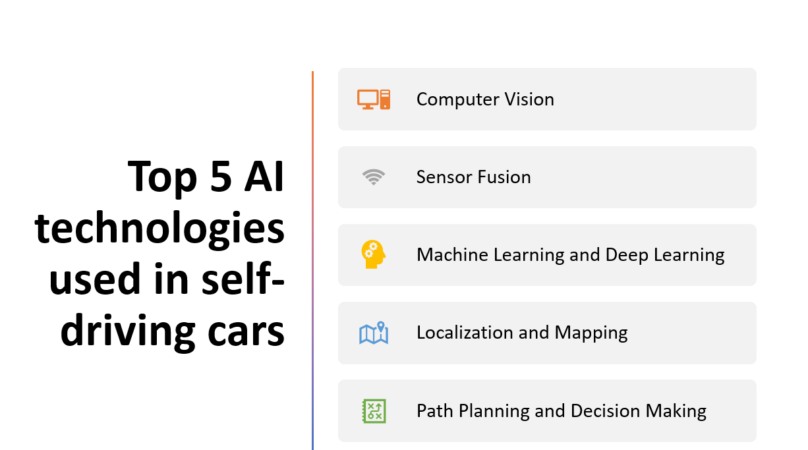

Introduction
Self-driving cars are at the forefront of innovation in the automotive industry, promising safer and more efficient transportation.
Artificial Intelligence (AI) technologies play a crucial role in enabling autonomous vehicles to perceive their environment, make decisions, and navigate complex road conditions.
In this blog post, we will explore the top five AI technologies used in self-driving cars, showcasing their contributions to the advancement of autonomous driving.
Advatages of using AI technologies in self-driving cars
- AI technologies in self-driving cars improve road safety by detecting and responding to potential hazards.
- AI algorithms optimize routes and decision-making for smoother and fuel-efficient journeys.
- AI-enabled self-driving cars enable coordinated traffic management, reducing congestion and enhancing traffic flow.
- AI-powered self-driving cars provide increased mobility options for individuals with limited mobility or those who are unable to drive.
- AI technologies in self-driving cars drive advancements towards fully autonomous vehicles and transform transportation systems.
Here Are Our Top 5 AI technologies used in self-driving cars:
1: Computer Vision
Overview and Importance
Computer vision is an essential AI technology that plays a fundamental role in the development of self-driving cars. It involves the use of algorithms and techniques to enable machines to perceive and understand visual information from their surrounding environment. In the context of autonomous vehicles, computer vision allows cars to "see" and interpret the world around them, making critical decisions based on the visual input received.
Key Components and Techniques
Object Detection and Recognition
- Algorithms that identify and categorize objects in images or video streams.
Image Segmentation
- Dividing an image into meaningful regions.
Optical Flow
- Tracking the motion of objects between consecutive frames.
- Identifying distinctive features in images or video frames for precise object localization and tracking.
2: Sensor Fusion
Overview and Importance
Sensor fusion is a crucial aspect of self-driving cars that involves integrating and combining data from various sensors to obtain a comprehensive understanding of the vehicle's environment. It plays a vital role in enabling autonomous vehicles to perceive their surroundings accurately and make informed decisions. By fusing data from different sensors, self-driving cars can enhance their perception capabilities, improve object detection and tracking, and ensure reliable and robust operation.
Key Components and Techniques
Lidar (Light Detection and Ranging)
- Provides precise distance measurements and high-resolution 3D point cloud data for object detection, localization, and mapping.
Radar (Radio Detection and Ranging)
- Uses radio waves to detect objects, measure distance, speed, and direction, and enhances perception in adverse weather conditions.
Cameras
- Capture visual data for object detection, recognition, and tracking, and provide rich information about the surroundings.
Inertial Measurement Units (IMUs)
- Measure vehicle acceleration, orientation, and angular velocity to estimate position and orientation accurately.
Sensor Fusion
- Combines data from multiple sensors using advanced algorithms and techniques such as Kalman filtering and deep learning-based fusion to create a comprehensive perception of the environment.
3: Machine Learning and Deep Learning
Overview and Importance
Machine learning and deep learning are essential components of self-driving cars, enabling them to analyze and make sense of the vast amount of data collected from sensors. These AI techniques allow vehicles to learn from experience, adapt to different driving scenarios, and make intelligent decisions in real-time. By leveraging machine learning and deep learning algorithms, self-driving cars can improve their perception, prediction, and decision-making capabilities, leading to safer and more efficient autonomous driving.
Training Self-Driving Cars using Machine Learning and Deep Learning
Data Collection
- Self-driving cars collect data from sensors like lidar, radar, and cameras to capture information about the environment and road conditions.
Model Training
- Machine learning and deep learning models are trained using the collected data to learn patterns, make predictions, and classify objects.
Deployment and Continuous Learning
- Trained models are deployed in self-driving cars to enable real-time decision-making, and they can be continually updated and improved using new data.
4: Localization and Mapping
Overview and Importance
Localization and mapping are crucial aspects of self-driving cars as they enable vehicles to understand their precise location and create accurate maps of the surrounding environment. These capabilities are essential for autonomous navigation, path planning, and obstacle avoidance. Localization involves determining a vehicle's position in the world, while mapping focuses on creating a detailed representation of the environment. By combining localization and mapping techniques, self-driving cars can navigate safely and efficiently.
Key Components and Techniques
Localization
- Techniques such as GPS, IMUs, and visual odometry are used to estimate the vehicle's position and orientation.
Mapping
- Methods like SLAM, point cloud mapping, and occupancy grid mapping are employed to create detailed maps of the environment, including object information and obstacle detection.
5: Path Planning and Decision Making
Overview and Importance
Path planning and decision making are crucial aspects of self-driving cars as they enable vehicles to determine the best route to a destination and make real-time decisions based on the surrounding environment. These capabilities are essential for safe and efficient navigation, considering factors such as traffic conditions, road regulations, and obstacles. Path planning algorithms determine the optimal path for the vehicle, while decision-making algorithms help the vehicle adapt to dynamic situations on the road.
Key Components and Techniques
Path Planning
- Graph-based approaches, PRMs, and potential fields are used to determine safe and efficient paths for the vehicle to follow, considering road network, obstacles, and vehicle dynamics.
Decision Making
- Rule-based systems and machine learning techniques, including reinforcement learning, are utilized to make decisions based on predefined rules or learned behaviors. Sensor fusion techniques combine data from multiple sensors to provide a holistic understanding of the environment for informed decision-making.
Conclusion
Self-driving cars represent a transformative application of AI technologies in the automotive industry. The integration of AI enables vehicles to perceive, analyze, and make informed decisions based on their surrounding environment, leading to safer and more efficient transportation.
Recapping the top five AI technologies used in self-driving cars:
Computer Vision: Computer vision plays a crucial role in perceiving the environment by identifying objects, pedestrians, and traffic signs. It enables vehicles to understand their surroundings and make informed decisions based on visual data.
Sensor Fusion: Sensor fusion integrates data from various sensors, such as lidar, radar, and cameras, to provide a comprehensive understanding of the environment. By combining multiple sensor inputs, self-driving cars can obtain more accurate and reliable information for decision making.
Machine Learning and Deep Learning: Machine learning and deep learning techniques are utilized to train models for various tasks, such as object detection, lane detection, and decision making. These techniques enable vehicles to learn from data and experiences, improving their driving capabilities over time.
Localization and Mapping: Localization and mapping technologies enable self-driving cars to determine their precise location in the environment and create detailed maps of their surroundings. Accurate localization and mapping are crucial for navigation and decision-making tasks.
Path Planning and Decision Making: Path planning algorithms determine the optimal route for self-driving cars, considering factors such as traffic conditions, road regulations, and obstacles. Decision-making algorithms help vehicles adapt to dynamic situations on the road, making real-time decisions for safe and efficient navigation.
The future development of self-driving cars faces challenges in regulations, public acceptance, and technical advancements. AI technologies play a crucial role in addressing these challenges and improving safety and reliability. With continued research and advancements, autonomous driving will lead to safer roads, reduced traffic congestion, and more efficient transportation systems.